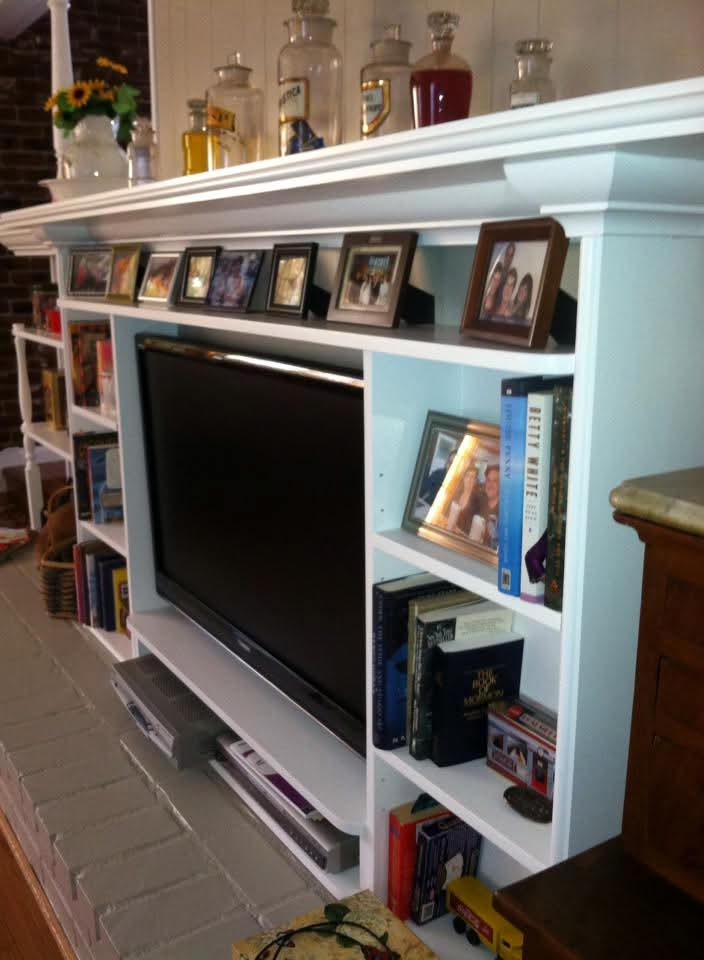
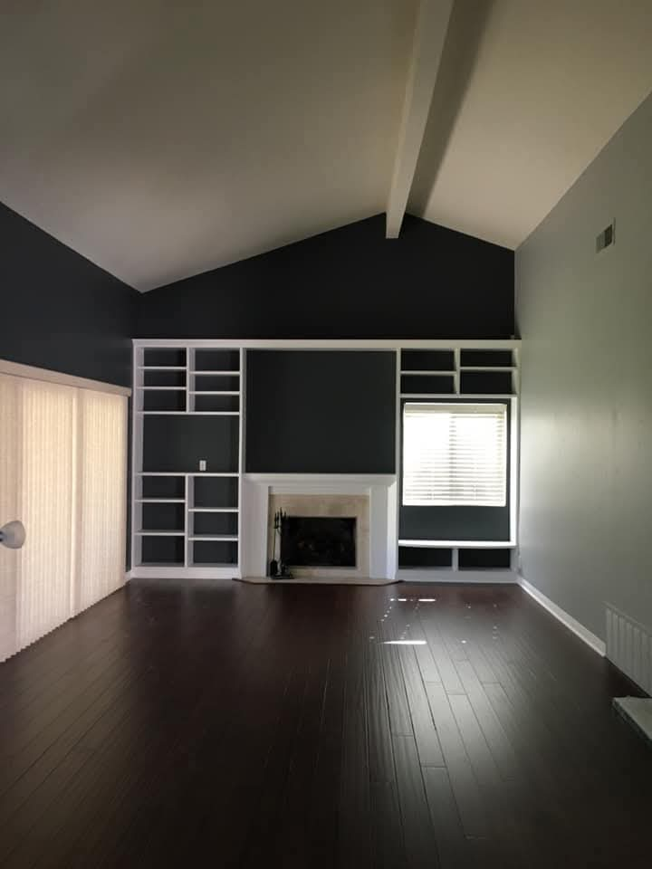
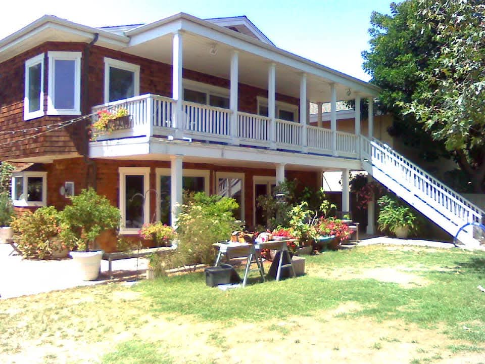

Media walls, storage, and shelving.
Custom pieces that change how a room works and feels.
Project gallery
This page is intentionally included in the first draft. The current photos are placeholders from old Facebook posts, but the structure is ready for better originals and real project details from Mark.

The first full project page because the photo set gives enough visual proof: wood grain, counters, kitchen context, and finish details.

Custom pieces that change how a room works and feels.

Strong candidate lane if Mark confirms the scope of these projects.
Gallery groups
These groups should become real project cards once Mark supplies names, locations by area, scope, before photos, and better finished shots.

Cabinets, islands, backsplashes, built-ins, and finish details.

Storage, shelves, doors, trim, floors, and room-defining pieces.

Outdoor projects used as supporting proof of range and scale.

Good secondary service lane, pending Mark's preference.

Hardware, doors, casing, and finish pieces that photograph well.

Use for heritage and craft, not as the whole brand identity.
What we need next
The design is doing its job if Mark can look at this and immediately know which better photos, project stories, and customer quotes he wants to add.
For each project: one wide finished shot, one medium angle, three close details, a before photo if available, what was built, and what materials or problem-solving details matter.